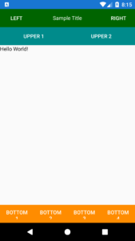

Post archive
Plan zajęć cz. 16 - Xamarin cd.
W tym tygodniu skupiłem się na dalszej implementacji prostego frameworka do Xamarina. Zaczyna on już nabierać kształtów, niedługo będzie można z niego korzystać.
Podstawowa strona
Cały framework opiera się na bazowej stronie, która robi za szablon strony. Wystarczy po niej dziedziczyć, aby szablon się wyświetlił obok zawartości strony. Dzięki temu w pliku *.xaml posiadamy tylko i wyłącznie rzeczy związane z widokiem danej strony, a nie obiekty odpowiedzialne za nawigację pokazywanie progress barów i innych kontrolek.{kind=link}

Na chwilę obecną wydzieliłem 3 kontrolki, które za każdym razem będą dostępne w każdej stronie. Pierwszą kontrolką dostępną jest NavigationBar, jest on własną implementacją paska nawigacji. Dzięki temu z platformy na platformę uzyskujemy taki sam wygląd. Kolejnymi komponentami są dwa ToolBary - górny i dolny, pozwalają one na dodanie dowolnej ilości przycisków z odpowiadającymi im komendami do wywołania. Dodatkowo na każdej stronie dziedziczącej po stronie bazowej istnieje możliwość wyświetlenia paska postępu oraz wskaźnika aktywności.